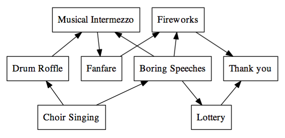

ビーバーの国では，お祝いの日にたくさんの行事があります。すべての行事は決められた順番で行う必要があります。
下の図には，行われるすべての行事が含まれています。矢印は，どの行事がどの行事の前に行われていないといけないかを表しています。
たとえば「Musical Intermezzo (間奏曲演奏)」は「Drum Roffle (太鼓連打)」と「Boring Speeches (退屈なあいさつ)」が両方とも終わった後でないと行えません。

"Choir Singing"から始まり，"Thank you"で終わります。
2番目から7番目の並べ方で，図の規則に合っていないのはどれですか？